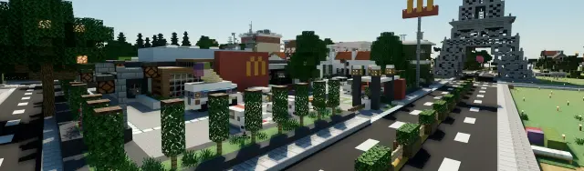

主页
光影安装教程
本栏目共 2 篇技术性图文。BRTX 光追与渲染龙光影的安装配置。点击任意一篇即可阅读全文，配图均已本地化保存。

BRTX光追安装说明
作者：橘猫sama · 2023年05月15日 23:24 · cv23700122
渲染龙光影安装指南
作者：橘猫sama · 编辑于 2026年10月11日 22:12 · cv53387200
 光影安装教程
光影安装教程
光影安装教程
光影安装教程